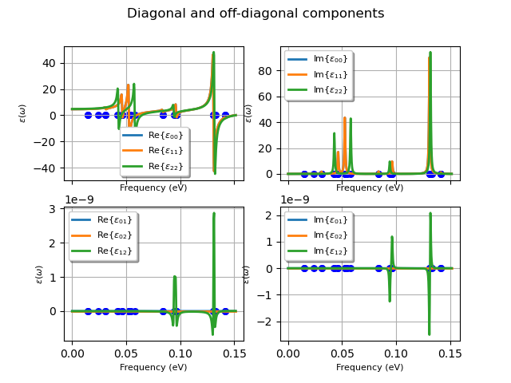
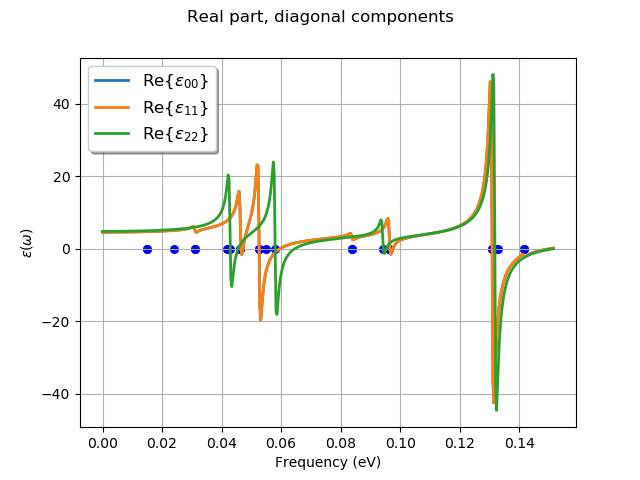
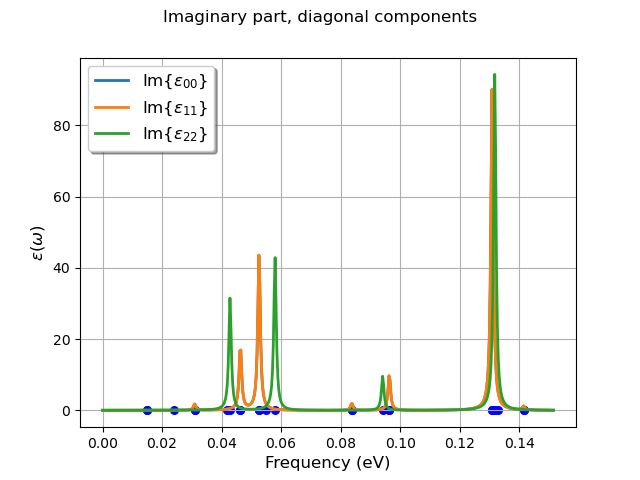

<!DOCTYPE html>
<html class="writer-html5" lang="en" >
<head>
  <meta charset="utf-8" />
  
  <meta name="viewport" content="width=device-width, initial-scale=1.0" />
  
  <title>Infrared spectrum of AlAs &mdash; abipy 0.9.1 documentation</title>
  

  
  <link rel="stylesheet" href="../_static/css/theme.css" type="text/css" />
  <link rel="stylesheet" href="../_static/pygments.css" type="text/css" />
  <link rel="stylesheet" href="../_static/graphviz.css" type="text/css" />
  <link rel="stylesheet" href="../_static/jupyter-sphinx.css" type="text/css" />
  <link rel="stylesheet" href="../_static/thebelab.css" type="text/css" />
  <link rel="stylesheet" href="../_static/my_style.css" type="text/css" />
  <link rel="stylesheet" href="../_static/gallery.css" type="text/css" />
  <link rel="stylesheet" href="../_static/gallery-binder.css" type="text/css" />
  <link rel="stylesheet" href="../_static/gallery-dataframe.css" type="text/css" />
  <link rel="stylesheet" href="../_static/gallery-rendered-html.css" type="text/css" />

  
  

  
  

  

  
    <script type="text/javascript" src="https://cdn.plot.ly/plotly-latest.min.js"></script> 
    
  <!--[if lt IE 9]>
    <script src="../_static/js/html5shiv.min.js"></script>
  <![endif]-->
  
    
      <script type="text/javascript" id="documentation_options" data-url_root="../" src="../_static/documentation_options.js"></script>
        <script src="../_static/jquery.js"></script>
        <script src="../_static/underscore.js"></script>
        <script src="../_static/doctools.js"></script>
        <script src="../_static/thebelab-helper.js"></script>
        <script src="https://cdnjs.cloudflare.com/ajax/libs/require.js/2.3.4/require.min.js"></script>
        <script src="https://unpkg.com/@jupyter-widgets/html-manager@^0.20.0/dist/embed-amd.js"></script>
    
    <script type="text/javascript" src="../_static/js/theme.js"></script>

    
    <link rel="index" title="Index" href="../genindex.html" />
    <link rel="search" title="Search" href="../search.html" />
    <link rel="next" title="Joint Density of States" href="plot_ejdos.html" />
    <link rel="prev" title="Gruneisen parameters" href="plot_gruneisen.html" /> 
</head>

<body class="wy-body-for-nav">

   
  <div class="wy-grid-for-nav">
    
    <nav data-toggle="wy-nav-shift" class="wy-nav-side">
      <div class="wy-side-scroll">
        <div class="wy-side-nav-search" >
          

          
            <a href="../index.html" class="icon icon-home"> abipy
          

          
          </a>

          
            
            
              <div class="version">
                0.9.1
              </div>
            
          

          
<div role="search">
  <form id="rtd-search-form" class="wy-form" action="../search.html" method="get">
    <input type="text" name="q" placeholder="Search docs" />
    <input type="hidden" name="check_keywords" value="yes" />
    <input type="hidden" name="area" value="default" />
  </form>
</div>

          
        </div>

        
        <div class="wy-menu wy-menu-vertical" data-spy="affix" role="navigation" aria-label="main navigation">
          
            
            
              
            
            
              <ul>
<li class="toctree-l1"><a class="reference internal" href="../features.html">Overview</a></li>
<li class="toctree-l1"><a class="reference internal" href="../installation.html">Getting AbiPy</a></li>
<li class="toctree-l1"><a class="reference internal" href="../changelog.html">Changelog</a></li>
<li class="toctree-l1"><a class="reference internal" href="../zzbiblio.html">Bibliography</a></li>
</ul>
<ul class="current">
<li class="toctree-l1"><a class="reference internal" href="../scripts/index.html">Scripts</a></li>
<li class="toctree-l1"><a class="reference internal" href="../graphical_interface.html">Graphical interface</a></li>
<li class="toctree-l1 current"><a class="reference internal" href="index.html">AbiPy Gallery</a><ul class="current">
<li class="toctree-l2"><a class="reference internal" href="plot_phonons.html">AlAs Phonon bands</a></li>
<li class="toctree-l2"><a class="reference internal" href="plot_wannier90_abiwan.html">Band structure interpolation with Wannier functions</a></li>
<li class="toctree-l2"><a class="reference internal" href="plot_ebands.html">Band structure plot</a></li>
<li class="toctree-l2"><a class="reference internal" href="plot_ebands_edos.html">Bands + DOS</a></li>
<li class="toctree-l2"><a class="reference internal" href="plot_mdf.html">Bethe-Salpeter</a></li>
<li class="toctree-l2"><a class="reference internal" href="plot_bz.html">Brillouin zone</a></li>
<li class="toctree-l2"><a class="reference internal" href="plot_dfpt_cycle.html">DFPT SCF cycle</a></li>
<li class="toctree-l2"><a class="reference internal" href="plot_phonons_msqd.html">Debye-Waller and generalized phonon DOS</a></li>
<li class="toctree-l2"><a class="reference internal" href="plot_den.html">Density</a></li>
<li class="toctree-l2"><a class="reference internal" href="plot_scr.html">Dielectric function with LFE</a></li>
<li class="toctree-l2"><a class="reference internal" href="plot_edos.html">Electron DOS</a></li>
<li class="toctree-l2"><a class="reference internal" href="plot_ebands_grid.html">ElectronBandsPlotter</a></li>
<li class="toctree-l2"><a class="reference internal" href="plot_eph_from_mp.html">Electrons and Phonons from the materials project website</a></li>
<li class="toctree-l2"><a class="reference internal" href="plot_a2f.html">Eliashberg function</a></li>
<li class="toctree-l2"><a class="reference internal" href="plot_funcs.html">Function1D object</a></li>
<li class="toctree-l2"><a class="reference internal" href="plot_gw_spectral_functions.html">G0W0 spectral function</a></li>
<li class="toctree-l2"><a class="reference internal" href="plot_qpconvergence.html">GW Convergence</a></li>
<li class="toctree-l2"><a class="reference internal" href="plot_qpbands_with_interpolation.html">GW corrections</a></li>
<li class="toctree-l2"><a class="reference internal" href="plot_qpbands_with_scissor.html">GW with scissors operator</a></li>
<li class="toctree-l2"><a class="reference internal" href="plot_gscycle.html">Ground-state SCF cycle</a></li>
<li class="toctree-l2"><a class="reference internal" href="plot_gruneisen.html">Gruneisen parameters</a></li>
<li class="toctree-l2 current"><a class="current reference internal" href="#">Infrared spectrum of AlAs</a></li>
<li class="toctree-l2"><a class="reference internal" href="plot_ejdos.html">Joint Density of States</a></li>
<li class="toctree-l2"><a class="reference internal" href="plot_kpath_from_ibz.html">K-path from IBZ</a></li>
<li class="toctree-l2"><a class="reference internal" href="plot_efatbands_lm.html">LM-fatbands</a></li>
<li class="toctree-l2"><a class="reference internal" href="plot_lobster_files.html">Lobster COHP/COP/DOS</a></li>
<li class="toctree-l2"><a class="reference internal" href="plot_lobster_cohp.html">Lobster COHPCAR</a></li>
<li class="toctree-l2"><a class="reference internal" href="plot_fermisurface.html">MgB2 Fermi surface</a></li>
<li class="toctree-l2"><a class="reference internal" href="plot_efatbands.html">MgB2 fatbands</a></li>
<li class="toctree-l2"><a class="reference internal" href="plot_multiple_mdf.html">Multiple Bethe-Salpeter calculations</a></li>
<li class="toctree-l2"><a class="reference internal" href="plot_multiple_hist.html">Multiple Structural relaxations</a></li>
<li class="toctree-l2"><a class="reference internal" href="plot_edos_vs_broad.html">Multiple e-DOSes</a></li>
<li class="toctree-l2"><a class="reference internal" href="plot_phbands_grid.html">Multiple phonon bands</a></li>
<li class="toctree-l2"><a class="reference internal" href="plot_phbands_nkpt_tsmear.html">Multiple phonon bands with DDB robot</a></li>
<li class="toctree-l2"><a class="reference internal" href="plot_optic.html">Optic results</a></li>
<li class="toctree-l2"><a class="reference internal" href="plotly_phbands_and_dos.html">Phonon Band structures (Plotly version)</a></li>
<li class="toctree-l2"><a class="reference internal" href="plot_phbands_and_dos.html">Phonon band structures with LO-TO</a></li>
<li class="toctree-l2"><a class="reference internal" href="plot_phonons_lo_to.html">Phonon bands with LO-TO from PHBST.nc</a></li>
<li class="toctree-l2"><a class="reference internal" href="plot_ddb_asr.html">Phonon bands with/without the ASR</a></li>
<li class="toctree-l2"><a class="reference internal" href="plot_phonon_fatbands.html">Phonon fatbands</a></li>
<li class="toctree-l2"><a class="reference internal" href="plot_potentials.html">Potentials</a></li>
<li class="toctree-l2"><a class="reference internal" href="plot_phonon_pjdos.html">Projected phonon DOS</a></li>
<li class="toctree-l2"><a class="reference internal" href="plot_qha.html">Quasi-harmonic approximation</a></li>
<li class="toctree-l2"><a class="reference internal" href="plot_qha_vs_qmesh.html">Quasi-harmonic approximation (convergence wrt Q-mesh)</a></li>
<li class="toctree-l2"><a class="reference internal" href="plot_scr_matrix.html">SCR matrix</a></li>
<li class="toctree-l2"><a class="reference internal" href="plot_qps.html">SIGRES file (GW)</a></li>
<li class="toctree-l2"><a class="reference internal" href="plot_ebands_boxplot.html">Seaborn boxplot</a></li>
<li class="toctree-l2"><a class="reference internal" href="plot_speed_of_sound.html">Speed of Sound</a></li>
<li class="toctree-l2"><a class="reference internal" href="plot_ebands_spin.html">Spin-polarized e-bands</a></li>
<li class="toctree-l2"><a class="reference internal" href="plot_hist.html">Structural relaxation</a></li>
<li class="toctree-l2"><a class="reference internal" href="plot_phthermo.html">Thermodinamic properties</a></li>
<li class="toctree-l2"><a class="reference internal" href="plot_fold2bloch.html">Unfolding with fold2bloch</a></li>
<li class="toctree-l2"><a class="reference internal" href="plot_structure.html">Unit cell</a></li>
<li class="toctree-l2"><a class="reference internal" href="plot_wannier90_wout.html">Wannier90 wout file</a></li>
<li class="toctree-l2"><a class="reference internal" href="plot_wfk.html">Wavefunction file</a></li>
<li class="toctree-l2"><a class="reference internal" href="plot_xrd.html">X-ray diffraction pattern</a></li>
<li class="toctree-l2"><a class="reference internal" href="plot_ebands_scatter3d.html">e-bands scatter3d</a></li>
<li class="toctree-l2"><a class="reference internal" href="plot_scqpgw.html">self-consistent GW</a></li>
<li class="toctree-l2"><a class="reference internal" href="plot_efatbands_spin.html">spin-polarized fatbands</a></li>
</ul>
</li>
<li class="toctree-l1"><a class="reference internal" href="../postprocessing_howto.html">Post-processing How-To</a></li>
</ul>
<ul>
<li class="toctree-l1"><a class="reference internal" href="../workflows/taskmanager.html">TaskManager</a></li>
<li class="toctree-l1"><a class="reference internal" href="../workflows/manager_examples.html">Manager Examples</a></li>
<li class="toctree-l1"><a class="reference internal" href="../flow_gallery/index.html">Flow Gallery</a></li>
<li class="toctree-l1"><a class="reference internal" href="../flows_howto.html">Flows How-To</a></li>
</ul>
<ul>
<li class="toctree-l1"><a class="reference internal" href="../api/index.html">API documentation</a></li>
<li class="toctree-l1"><a class="reference internal" href="../coding_guide.html">Coding guide</a></li>
<li class="toctree-l1"><a class="reference internal" href="../README.html">Documenting AbiPy</a></li>
</ul>

            
          
        </div>
        
      </div>
    </nav>

    <section data-toggle="wy-nav-shift" class="wy-nav-content-wrap">

      
      <nav class="wy-nav-top" aria-label="top navigation">
        
          <i data-toggle="wy-nav-top" class="fa fa-bars"></i>
          <a href="../index.html">abipy</a>
        
      </nav>


      <div class="wy-nav-content">
        
        <div class="rst-content">
        
          


<div role="navigation" aria-label="breadcrumbs navigation">

  <ul class="wy-breadcrumbs">
    
      <li><a href="../index.html" class="icon icon-home"></a> &raquo;</li>
        
          <li><a href="index.html">AbiPy Gallery</a> &raquo;</li>
        
      <li>Infrared spectrum of AlAs</li>
    
    
      <li class="wy-breadcrumbs-aside">
        
          
            <a href="../_sources/gallery/plot_phonons_infrared.rst.txt" rel="nofollow"> View page source</a>
          
        
      </li>
    
  </ul>

  
  <hr/>
</div>
          <div role="main" class="document" itemscope="itemscope" itemtype="http://schema.org/Article">
           <div itemprop="articleBody">
            
  <div class="sphx-glr-download-link-note admonition note">
<p class="admonition-title">Note</p>
<p>Click <a class="reference internal" href="#sphx-glr-download-gallery-plot-phonons-infrared-py"><span class="std std-ref">here</span></a>
to download the full example code or to run this example in your browser via Binder</p>
</div>
<div class="sphx-glr-example-title section" id="infrared-spectrum-of-alas">
<span id="sphx-glr-gallery-plot-phonons-infrared-py"></span><h1>Infrared spectrum of AlAs<a class="headerlink" href="#infrared-spectrum-of-alas" title="Permalink to this headline">¶</a></h1>
<p>This example shows how to plot the infrared spectrum of a polar semiconductor (AlAs)
from the DDB file  See tutorial/lesson_rf2.html</p>
<p>For a command line interfase, use:</p>
<blockquote>
<div><p>abiview.py ddb_ir in_DDB</p>
</div></blockquote>
<ul class="sphx-glr-horizontal">
<li>
</li>
<li>
</li>
<li>
</li>
</ul>
<p class="sphx-glr-script-out">Out:</p>
<div class="sphx-glr-script-out highlight-none notranslate"><div class="highlight"><pre><span></span>Creating temporary file: /var/folders/nc/k69spyd12qv2tk3stk2xrxg40000gr/T/tmpe6h25tp8mp-7000_DDB
ANADDB INPUT:
 # ANADDB input for phonon frequencies for a list of q-points generated by AbiPy.
 ifcflag 0
 asr 2
 chneut 1
 dipdip 1
 nph1l 1
 qph1l
 0 0 0
 1
 dieflag 1
workdir: /var/folders/nc/k69spyd12qv2tk3stk2xrxg40000gr/T/tmpuuxxisnu
================================= Structure =================================
Full Formula (Si3 O6)
Reduced Formula: SiO2
abc   :   4.949906   4.949906   5.440897
angles:  90.000000  90.000000 120.000000
Sites (9)
  #  SP           a         b         c
---  ----  --------  --------  --------
  0  Si    0.528855  0         0.833333
  1  Si    0.471145  0.471145  0.5
  2  Si    0         0.528855  0.166667
  3  O     0.413167  0.147706  0.620242
  4  O     0.852294  0.265462  0.953576
  5  O     0.734538  0.586833  0.286909
  6  O     0.265462  0.852294  0.046424
  7  O     0.147706  0.413167  0.379758
  8  O     0.586833  0.734538  0.713091

Abinit Spacegroup: spgid: 0, num_spatial_symmetries: 6, has_timerev: True, symmorphic: True

============================ Oscillator strength ============================
Real part in Cartesian coordinates. a.u. units; 1 a.u. = 253.2638413 m3/s2. Set to zero below 1.00e-06.
                          xx                      yy                      zz   yz   xz   xy
mode
0                        0.0                     0.0                     0.0  0.0  0.0  0.0
1                        0.0                     0.0                     0.0  0.0  0.0  0.0
2                        0.0                     0.0                     0.0  0.0  0.0  0.0
3                        0.0                     0.0                     0.0  0.0  0.0  0.0
4                        0.0                     0.0                     0.0  0.0  0.0  0.0
5                        0.0                     0.0                     0.0  0.0  0.0  0.0
6      4.424721071887155e-06                     0.0                     0.0  0.0  0.0  0.0
7                        0.0  4.4247210721060125e-06                     0.0  0.0  0.0  0.0
8                        0.0                     0.0                     0.0  0.0  0.0  0.0
9                        0.0                     0.0  0.00011308265177993414  0.0  0.0  0.0
10     6.992796119441694e-05                     0.0                     0.0  0.0  0.0  0.0
11                       0.0   6.992796120317467e-05                     0.0  0.0  0.0  0.0
12                       0.0  0.00019407121095825906                     0.0  0.0  0.0  0.0
13    0.00019407121096247612                     0.0                     0.0  0.0  0.0  0.0
14                       0.0                     0.0                     0.0  0.0  0.0  0.0
15                       0.0                     0.0   0.0002088048331944179  0.0  0.0  0.0
16                       0.0  1.3565145055186532e-05                     0.0  0.0  0.0  0.0
17      1.35651450549781e-05                     0.0                     0.0  0.0  0.0  0.0
18                       0.0                     0.0    7.53302028638474e-05  0.0  0.0  0.0
19                       0.0   8.105029357467735e-05                     0.0  0.0  0.0  0.0
20     8.105029357316916e-05                     0.0                     0.0  0.0  0.0  0.0
21                       0.0   0.0009908321002341537                     0.0  0.0  0.0  0.0
22     0.0009908321002363605                     0.0                     0.0  0.0  0.0  0.0
23                       0.0                     0.0     0.00104343737460126  0.0  0.0  0.0
24                       0.0                     0.0                     0.0  0.0  0.0  0.0
25    1.2586418339120033e-05                     0.0                     0.0  0.0  0.0  0.0
26                       0.0  1.2586418336794277e-05                     0.0  0.0  0.0  0.0

============================= Dielectric Tensors =============================
Electronic dielectric tensor (eps_inf) in Cartesian coordinates. Set to zero below 1.00e-03.
         x        y         z
x  2.45581  0.00000  0.000000
y  0.00000  2.45581  0.000000
z  0.00000  0.00000  2.486826

Zero-frequency dielectric tensor (eps_zero) in Cartesian coordinates. Set to zero below 1.00e-03.
          x         y         z
x  4.564213  0.000000  0.000000
y  0.000000  4.564213  0.000000
z  0.000000  0.000000  4.783768
</pre></div>
</div>
<div class="line-block">
<div class="line"><br /></div>
</div>
<div class="highlight-default notranslate"><div class="highlight"><pre><span></span><span class="kn">import</span> <span class="nn">os</span>
<span class="kn">import</span> <span class="nn">abipy.data</span> <span class="k">as</span> <span class="nn">abidata</span>

<span class="kn">from</span> <span class="nn">abipy</span> <span class="kn">import</span> <span class="n">abilab</span>

<span class="c1"># Open DDB file for alpha-SiO2 taken from https://materialsproject.org/materials/mp-7000/</span>
<a href="https://docs.python.org/3/library/stdtypes.html#str" title="builtins.str" class="sphx-glr-backref-module-builtins sphx-glr-backref-type-py-class sphx-glr-backref-instance"><span class="n">filepath</span></a> <span class="o">=</span> <a href="https://docs.python.org/3/library/os.path.html#os.path.join" title="os.path.join" class="sphx-glr-backref-module-os-path sphx-glr-backref-type-py-function"><span class="n">os</span><span class="o">.</span><span class="n">path</span><span class="o">.</span><span class="n">join</span></a><span class="p">(</span><a href="https://docs.python.org/3/library/stdtypes.html#str" title="builtins.str" class="sphx-glr-backref-module-builtins sphx-glr-backref-type-py-class sphx-glr-backref-instance"><span class="n">abidata</span><span class="o">.</span><span class="n">dirpath</span></a><span class="p">,</span> <span class="s2">&quot;refs&quot;</span><span class="p">,</span> <span class="s2">&quot;mp-7000_DDB.bz2&quot;</span><span class="p">)</span>
<a href="../api/dfpt_api.html#abipy.dfpt.ddb.DdbFile" title="abipy.dfpt.ddb.DdbFile" class="sphx-glr-backref-module-abipy-dfpt-ddb sphx-glr-backref-type-py-class sphx-glr-backref-instance"><span class="n">ddb</span></a> <span class="o">=</span> <a href="../api/abilab_api.html#abipy.abilab.abiopen" title="abipy.abilab.abiopen" class="sphx-glr-backref-module-abipy-abilab sphx-glr-backref-type-py-function"><span class="n">abilab</span><span class="o">.</span><span class="n">abiopen</span></a><span class="p">(</span><a href="https://docs.python.org/3/library/stdtypes.html#str" title="builtins.str" class="sphx-glr-backref-module-builtins sphx-glr-backref-type-py-class sphx-glr-backref-instance"><span class="n">filepath</span></a><span class="p">)</span>

<span class="c1"># Invoke anaddb to compute dielectric tensor and oscillator strength.</span>
<a href="../api/dfpt_api.html#abipy.dfpt.ddb.DielectricTensorGenerator" title="abipy.dfpt.ddb.DielectricTensorGenerator" class="sphx-glr-backref-module-abipy-dfpt-ddb sphx-glr-backref-type-py-class sphx-glr-backref-instance"><span class="n">tgen</span></a> <span class="o">=</span> <a href="../api/dfpt_api.html#abipy.dfpt.ddb.DdbFile.anaget_dielectric_tensor_generator" title="abipy.dfpt.ddb.DdbFile.anaget_dielectric_tensor_generator" class="sphx-glr-backref-module-abipy-dfpt-ddb sphx-glr-backref-type-py-method"><span class="n">ddb</span><span class="o">.</span><span class="n">anaget_dielectric_tensor_generator</span></a><span class="p">(</span><span class="n">asr</span><span class="o">=</span><span class="mi">2</span><span class="p">,</span> <span class="n">chneut</span><span class="o">=</span><span class="mi">1</span><span class="p">,</span> <span class="n">dipdip</span><span class="o">=</span><span class="mi">1</span><span class="p">,</span> <span class="n">verbose</span><span class="o">=</span><span class="mi">1</span><span class="p">)</span>
<span class="nb">print</span><span class="p">(</span><a href="../api/dfpt_api.html#abipy.dfpt.ddb.DielectricTensorGenerator" title="abipy.dfpt.ddb.DielectricTensorGenerator" class="sphx-glr-backref-module-abipy-dfpt-ddb sphx-glr-backref-type-py-class sphx-glr-backref-instance"><span class="n">tgen</span></a><span class="p">)</span>

<span class="c1"># Set phonon damping factor in eV (full width).</span>
<a href="https://docs.python.org/3/library/functions.html#float" title="builtins.float" class="sphx-glr-backref-module-builtins sphx-glr-backref-type-py-class sphx-glr-backref-instance"><span class="n">gamma_ev</span></a> <span class="o">=</span> <span class="mf">1e-3</span>

<span class="c1"># Plot IR spectrum in Cartesian coordinates.</span>
<a href="../api/dfpt_api.html#abipy.dfpt.ddb.DielectricTensorGenerator.plot_all" title="abipy.dfpt.ddb.DielectricTensorGenerator.plot_all" class="sphx-glr-backref-module-abipy-dfpt-ddb sphx-glr-backref-type-py-method"><span class="n">tgen</span><span class="o">.</span><span class="n">plot_all</span></a><span class="p">(</span><a href="https://docs.python.org/3/library/functions.html#float" title="builtins.float" class="sphx-glr-backref-module-builtins sphx-glr-backref-type-py-class sphx-glr-backref-instance"><span class="n">gamma_ev</span></a><span class="o">=</span><a href="https://docs.python.org/3/library/functions.html#float" title="builtins.float" class="sphx-glr-backref-module-builtins sphx-glr-backref-type-py-class sphx-glr-backref-instance"><span class="n">gamma_ev</span></a><span class="p">,</span> <span class="n">title</span><span class="o">=</span><span class="s2">&quot;Diagonal and off-diagonal components&quot;</span><span class="p">)</span>

<a href="../api/dfpt_api.html#abipy.dfpt.ddb.DielectricTensorGenerator.plot" title="abipy.dfpt.ddb.DielectricTensorGenerator.plot" class="sphx-glr-backref-module-abipy-dfpt-ddb sphx-glr-backref-type-py-method"><span class="n">tgen</span><span class="o">.</span><span class="n">plot</span></a><span class="p">(</span><span class="n">component</span><span class="o">=</span><span class="s2">&quot;diag&quot;</span><span class="p">,</span> <span class="n">reim</span><span class="o">=</span><span class="s2">&quot;re&quot;</span><span class="p">,</span> <a href="https://docs.python.org/3/library/functions.html#float" title="builtins.float" class="sphx-glr-backref-module-builtins sphx-glr-backref-type-py-class sphx-glr-backref-instance"><span class="n">gamma_ev</span></a><span class="o">=</span><a href="https://docs.python.org/3/library/functions.html#float" title="builtins.float" class="sphx-glr-backref-module-builtins sphx-glr-backref-type-py-class sphx-glr-backref-instance"><span class="n">gamma_ev</span></a><span class="p">,</span> <span class="n">title</span><span class="o">=</span><span class="s2">&quot;Real part, diagonal components&quot;</span><span class="p">)</span>
<a href="../api/dfpt_api.html#abipy.dfpt.ddb.DielectricTensorGenerator.plotly" title="abipy.dfpt.ddb.DielectricTensorGenerator.plotly" class="sphx-glr-backref-module-abipy-dfpt-ddb sphx-glr-backref-type-py-method"><span class="n">tgen</span><span class="o">.</span><span class="n">plotly</span></a><span class="p">(</span><span class="n">component</span><span class="o">=</span><span class="s2">&quot;diag&quot;</span><span class="p">,</span> <span class="n">reim</span><span class="o">=</span><span class="s2">&quot;re&quot;</span><span class="p">,</span> <a href="https://docs.python.org/3/library/functions.html#float" title="builtins.float" class="sphx-glr-backref-module-builtins sphx-glr-backref-type-py-class sphx-glr-backref-instance"><span class="n">gamma_ev</span></a><span class="o">=</span><a href="https://docs.python.org/3/library/functions.html#float" title="builtins.float" class="sphx-glr-backref-module-builtins sphx-glr-backref-type-py-class sphx-glr-backref-instance"><span class="n">gamma_ev</span></a><span class="p">,</span> <span class="n">title</span><span class="o">=</span><span class="s2">&quot;Real part, diagonal components&quot;</span><span class="p">)</span>

<a href="../api/dfpt_api.html#abipy.dfpt.ddb.DielectricTensorGenerator.plot" title="abipy.dfpt.ddb.DielectricTensorGenerator.plot" class="sphx-glr-backref-module-abipy-dfpt-ddb sphx-glr-backref-type-py-method"><span class="n">tgen</span><span class="o">.</span><span class="n">plot</span></a><span class="p">(</span><span class="n">component</span><span class="o">=</span><span class="s2">&quot;diag&quot;</span><span class="p">,</span> <span class="n">reim</span><span class="o">=</span><span class="s2">&quot;im&quot;</span><span class="p">,</span> <a href="https://docs.python.org/3/library/functions.html#float" title="builtins.float" class="sphx-glr-backref-module-builtins sphx-glr-backref-type-py-class sphx-glr-backref-instance"><span class="n">gamma_ev</span></a><span class="o">=</span><a href="https://docs.python.org/3/library/functions.html#float" title="builtins.float" class="sphx-glr-backref-module-builtins sphx-glr-backref-type-py-class sphx-glr-backref-instance"><span class="n">gamma_ev</span></a><span class="p">,</span> <span class="n">title</span><span class="o">=</span><span class="s2">&quot;Imaginary part, diagonal components&quot;</span><span class="p">)</span>
<a href="../api/dfpt_api.html#abipy.dfpt.ddb.DielectricTensorGenerator.plotly" title="abipy.dfpt.ddb.DielectricTensorGenerator.plotly" class="sphx-glr-backref-module-abipy-dfpt-ddb sphx-glr-backref-type-py-method"><span class="n">tgen</span><span class="o">.</span><span class="n">plotly</span></a><span class="p">(</span><span class="n">component</span><span class="o">=</span><span class="s2">&quot;diag&quot;</span><span class="p">,</span> <span class="n">reim</span><span class="o">=</span><span class="s2">&quot;im&quot;</span><span class="p">,</span> <a href="https://docs.python.org/3/library/functions.html#float" title="builtins.float" class="sphx-glr-backref-module-builtins sphx-glr-backref-type-py-class sphx-glr-backref-instance"><span class="n">gamma_ev</span></a><span class="o">=</span><a href="https://docs.python.org/3/library/functions.html#float" title="builtins.float" class="sphx-glr-backref-module-builtins sphx-glr-backref-type-py-class sphx-glr-backref-instance"><span class="n">gamma_ev</span></a><span class="p">,</span> <span class="n">title</span><span class="o">=</span><span class="s2">&quot;Imaginary part, diagonal components&quot;</span><span class="p">)</span>

<a href="../api/dfpt_api.html#abipy.dfpt.ddb.DdbFile" title="abipy.dfpt.ddb.DdbFile" class="sphx-glr-backref-module-abipy-dfpt-ddb sphx-glr-backref-type-py-class sphx-glr-backref-instance"><span class="n">ddb</span></a><span class="o">.</span><span class="n">close</span><span class="p">()</span>
</pre></div>
</div>
<p class="sphx-glr-timing"><strong>Total running time of the script:</strong> ( 0 minutes  2.469 seconds)</p>
<div class="sphx-glr-footer class sphx-glr-footer-example docutils container" id="sphx-glr-download-gallery-plot-phonons-infrared-py">
<div class="binder-badge docutils container">
<a class="reference external image-reference" href="https://mybinder.org/v2/gh/abinit/abipy/gh-pages?filepath=notebooks/gallery/plot_phonons_infrared.ipynb"></a>
</div>
<div class="sphx-glr-download sphx-glr-download-python docutils container">
<p><a class="reference download internal" download="" href="../_downloads/a325bb1712d107af6b14549c5842204f/plot_phonons_infrared.py"><code class="xref download docutils literal notranslate"><span class="pre">Download</span> <span class="pre">Python</span> <span class="pre">source</span> <span class="pre">code:</span> <span class="pre">plot_phonons_infrared.py</span></code></a></p>
</div>
<div class="sphx-glr-download sphx-glr-download-jupyter docutils container">
<p><a class="reference download internal" download="" href="../_downloads/d36605e48259db7595e7fe59e5f3304e/plot_phonons_infrared.ipynb"><code class="xref download docutils literal notranslate"><span class="pre">Download</span> <span class="pre">Jupyter</span> <span class="pre">notebook:</span> <span class="pre">plot_phonons_infrared.ipynb</span></code></a></p>
</div>
</div>
<p class="sphx-glr-signature"><a class="reference external" href="https://sphinx-gallery.github.io">Gallery generated by Sphinx-Gallery</a></p>
</div>


           </div>
           
          </div>
          <footer>
    <div class="rst-footer-buttons" role="navigation" aria-label="footer navigation">
        <a href="plot_ejdos.html" class="btn btn-neutral float-right" title="Joint Density of States" accesskey="n" rel="next">Next <span class="fa fa-arrow-circle-right" aria-hidden="true"></span></a>
        <a href="plot_gruneisen.html" class="btn btn-neutral float-left" title="Gruneisen parameters" accesskey="p" rel="prev"><span class="fa fa-arrow-circle-left" aria-hidden="true"></span> Previous</a>
    </div>

  <hr/>

  <div role="contentinfo">
    <p>
        &#169; Copyright 2021, M. Giantomassi and the AbiPy group.
      <span class="lastupdated">
        Last updated on Jun 01, 2021.
      </span>

    </p>
  </div>
    
    
    
    Built with <a href="https://www.sphinx-doc.org/">Sphinx</a> using a
    
    <a href="https://github.com/readthedocs/sphinx_rtd_theme">theme</a>
    
    provided by <a href="https://readthedocs.org">Read the Docs</a>. 

</footer>
        </div>
      </div>

    </section>

  </div>
  

  <script type="text/javascript">
      jQuery(function () {
          SphinxRtdTheme.Navigation.enable(true);
      });
  </script>

  
  
    
   

</body>
</html>